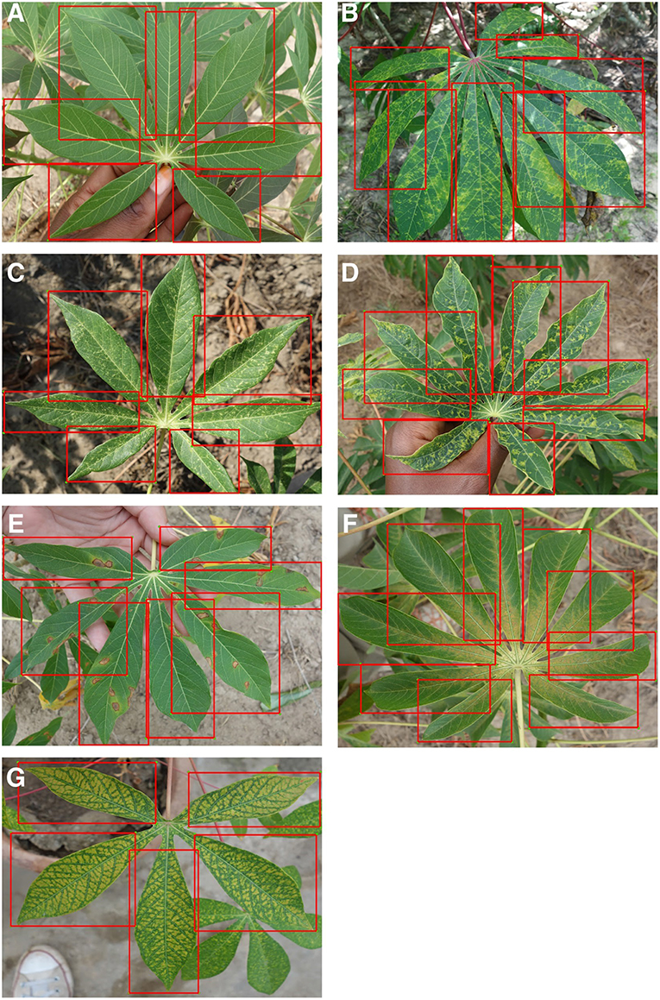

Survey of Future Technology
ATU Open House
October 29, 2020
Areas of Interest
- Big Data
- Artificial Intelligence / Machine Learning / Deep Learning
- Natural Language Processing
Deep Learning
Tanzanian Cassava Plants

Machine Learning
- WPDx (Water Point Data Exchange)
- Large amounts of data about water points around the world
- Machine learning for predictions about water point failure
- Informs community, government, or NGO planning
// reveal.js plugins